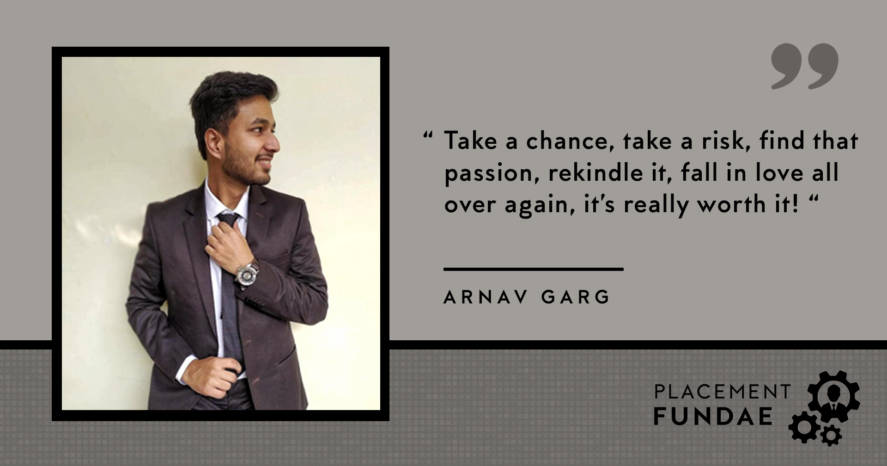
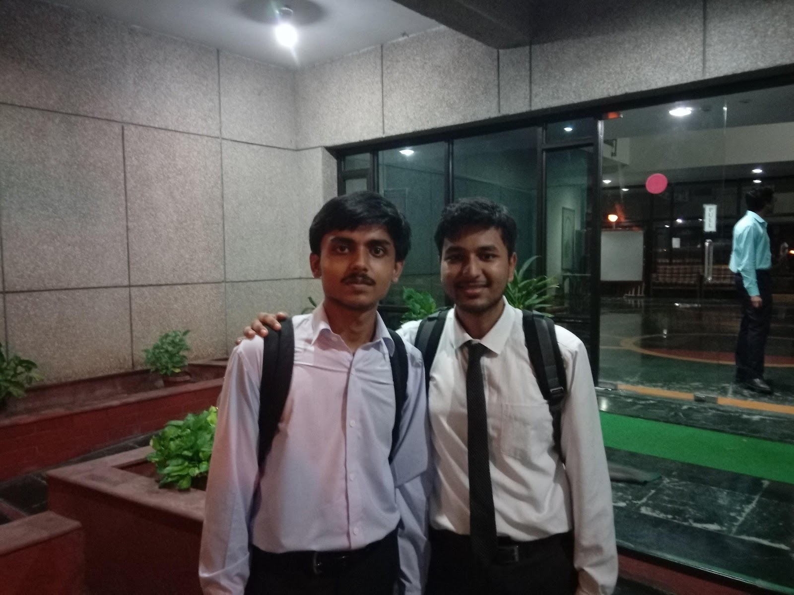
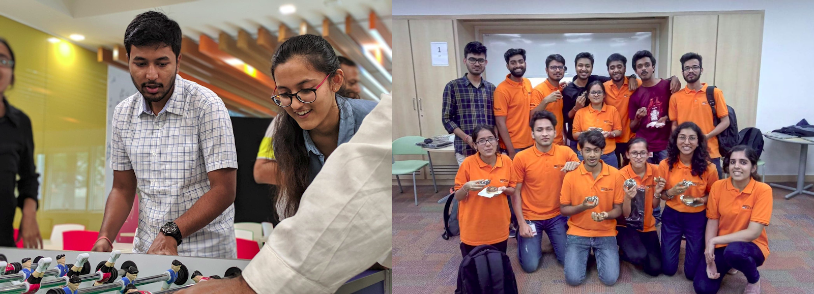
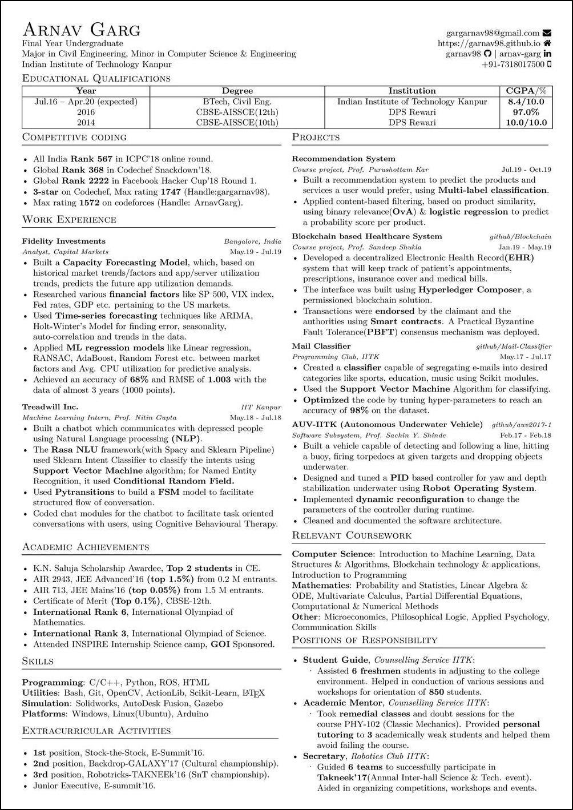
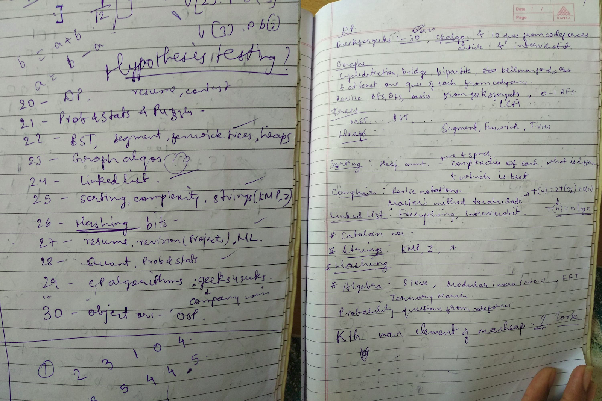
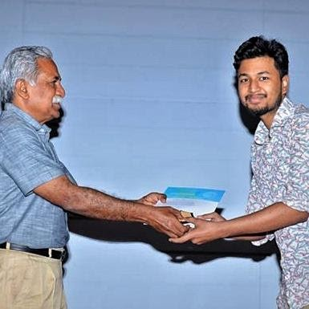
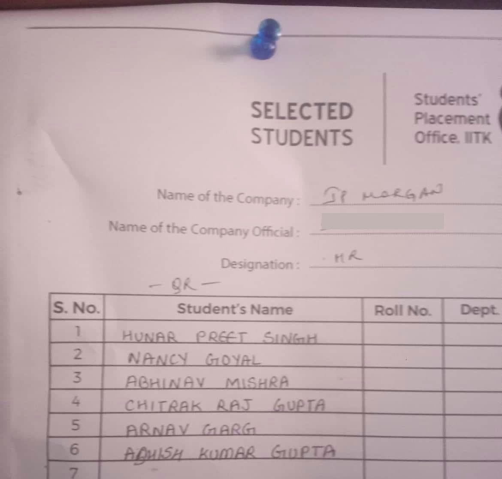

September 16, 2020
From “1 Crore ka package” in the first year to not even sitting for placements for higher studies, these 4 years teach you a lot more than any career counselor ever could. With the right goal in mind, persevering towards it is the key to achieve it. With the above ‘profound’ words, let me introduce myself. My name is Arnav Garg, I’m a Y16 undergrad (would be an alum by the time you read this, sad reacts only) from the Civil Engineering department, and below is my journey from being a nervous, apprehensive freshman to securing a Day-1-Slot-1 job offer from JP Morgan and Chase as a Quantitative Researcher.

My field of interest lies in Quantitative analysis and algorithms. For those of you who don’t know, Quant is basically a mixture of Mathematics and Machine learning used to solve financial problems. It extensively relies on your analytical skills along with the knowledge of Probability theory. This knowledge is used to build mathematical models for various predictive purposes, the work which I hope to pursue in the future.
Often one hears seniors talk about the importance of POR in placements and yet the POR section in my resume didn’t have any major highlights; “Academic mentor, CS'', “Student Guide, CS'' and “Secretary, Robotics club”. And while they may have an impact, I believe there is no direct relationship. I’d say I had a decent CPI (8.4 at the time of placements). It was towards the end of the second year when I started to worry about the upcoming months; no hard skills, no technical interests, adequate CPI, and definitely, no PORs. Some very wise words from my seniors and my initial fascination with algorithms found me going for the most unconventional skill which very few people in the campus work on, coding. I’ll be talking more about how I went about preparing in the later part of the blog.

I had about a couple of projects in ML which, believe me, were not a big deal. One of them was under Pclub, which was more like an online course I did along with my peers. The other was a project I did in my second year summers, under Prof. Nitin Gupta (BSBE dept.). I was part of a team that coded chatbots to diagnose mentally ill patients. For people who want to do projects in ML, Coursera/Udacity is the best source. The good thing about these online platforms is that they almost always have an associated project at the end of the course. Getting a project under a prof. is tough, given that not many profs. in our college actively work in ML. You need to prove yourself before you’re offered a summer opportunity. I started mailing profs as soon as the 2nd year winters and worked with them throughout the 4th sem before I was finally accepted for the summers. “Summer surakshit ho gayi”, as my wingies used to say!
I was fortunate enough to secure an intern with Fidelity Investments as an Analyst. So Fidelity is a financial services firm, they basically take your money and help you grow it. I worked on a rather interesting project named ‘Capacity Forecasting’. We basically researched various financial indices, market trends, the semantic outlook of the economy (of the US markets primarily), and tried correlating the data with Fidelity’s processor utilization trends using time-series forecasting and later with ML models.
The good part of an internship is it gives you a glimpse of the life you’re gonna live ahead; you get a stipend, you spend it, and earn your living. Going house hunting with your friends, cooking your meals at night, the weekend parties, and spending hours on the office foosball table, all of it was so surreal as if it happened just recently. I still remember the moment when I went to encash my first stipend cheque, it was so liberating! Too bad COVID robbed people of this experience.

Throughout the years, I never got interested enough in my branch. Even in the last exam, I wrote, ‘bending moment’ and ‘shearing stress’ seemed to laugh at me. Not being associated with core branch work at any point, the huge dearth of opportunities in the core sector, a natural fascination towards coding/algorithms, and a huge affinity for the intern work were some of the factors which led me to sit for the Quant/Coding profile in the placements. At this point it may seem to the reader I chose my field by ‘eliminating the options’, but to that, I ask, isn't that what every life’s decision is about? You can’t start something knowing well that it’s what you want to do; learning, exploring, and accepting or moving on is part of the journey, it’s just that I was lucky enough to find my initial path riveting enough.
While people spend these 2 months in pure ecstasy and delight, there is always a bug gnawing them in hindsight, and that is the fear and reluctance of the next sem; the Placement sem. While toiling hard in internships to receive a PPO is good, I've seen many people accepting PPO’s just to avoid the hassle and the fear of rejection of the placements. DO NOT SETTLE FOR LESS! Choosing a job that you are not interested in is analogous to choosing a non-preferred branch in an Old IIT; you’ll like the stately workplace(campus) but not the work(courses), and you’ll end up seeking a job change(branch change).
The process of Placements is largely fair and vindicated, unlike the ‘throw of a dice’ intern season. The basic timeline is similar to that of the intern though:
1. Companies start coming up on the portal from as early as August.
2. The PPT’s also commence from early August. You can miss up to 2-3 PPTs according to standard SPO guidelines.
3. The tests start late; I gave my first test in late Sept, so you have about 2-3 months of time for preparation after your intern ends.
4. You may have GD’s/case studies/telephonic interviews for some companies during the semester for some companies, but that is for like ~20% offers, rest 80% will conduct tests only and their interviews will start from 1st December.
5. The shortlists come out very late, as late as Nov. One month before the D-Day you won’t even know what all companies have shortlisted you, if you even have an interview on Day-1 or not!
6. Based on shortlists, the interview slots come around the last 10 days of Nov. Day-1 and Day-2 are divided into 2 slots each, and the subsequent days do not have any division, as the no. of companies lessen from Day-1,2.
7. Interview rounds vary from company to company, on average you would have about 3 rounds. The interview results usually come at the end of the day/slot. The result list is attached on a pin-board (and not disclosed to you vis-à-vis), which is your gateway to your dream job!
As soon as I came back from my intern, I started working on my resume. The SPO needs your resume by around mid-August, which might extend till the end of August after a few deadline extensions. Now having seen various resumes of my fellow peers, I have observed one thing, people of our college just don’t care enough about their resumes! No matter how many resume preparing workshops are held, no matter how many seniors review them, it’s never up to the mark. I remember a friend who had a typo in his own name in his resume, and he noticed that during the 6th sem when half the intern season was already over!
Though it’s already been said quite a few times, please use Latex to prepare your resume. No word, no MS-Office or LibreOffice. Get it reviewed by relevant seniors, go through multiple iterations to arrive at the final draft. I prepared 3 resumes; one for finance, one for fintech, and the third for pure coding. Depending on your profile you can settle for more or less.
Starting preparation is the toughest task, I procrastinated until late August when it began to get scary. Too traumatized by the intern selection experience where I was rejected many times due to my branch, I knew the placement scenario was not going to be different, so I hoped for the PPO. The results came at the end of August, and I wasn’t offered one. That was when I realized I was in deep trouble, cause I had not even begun my preparation!
I started by preparing my schedule, I shortlisted all the important topics relevant for placements; from BST, Hashing, DP, Graph, linked list to Probability, Hypothesis, expectation value, etc. The list was so long, I was already feeling cramped. I associated each topic with a date and pledged to stick to the schedule. All in all, I ‘planned’ to complete it by the end of October.

I started with Quant as it is usually overlooked but is of paramount importance. The reason I say that is, you see you’ll find many students enhancing their coding skills for clearing the tests, but what happens is that at the end companies will prefer CS students over you for core coding profiles no matter what. But if you know Quant, you would have an edge over all the other non-core profiles, because competition for Quant is less, as few people work on this skill making it all the more important. I religiously did the book ‘Fifty Challenging problems’ and practiced questions from brainstellar.com, which was sufficient to have a good grasp over Quant.
Now I have been coding since the second year, which kind of gives you a small ego boost over people who have just started coding for placement purposes in the last year. The same thing happened to me, too confident in the coding skills I didn’t practice at all. And boy oh boy I managed to solve just 1 question out of 3 in my first coding test, while my peers, who had just started coding managed to solve 2, some even the 3rd (partially)! That was my wake up call to put on my coding hat and start practicing. I started with interviewbit.com, which is an excellent source for placement prep. It has questions with company tags which helps you in solving questions specific to the company you are targeting. Moreover, it provides a very elegant solution approach; it gives you a hint, then the solution approach, and finally, the complete solution. I found it to be very helpful. This combined with geeksforgeeks.com was enough for me to ace my tests.
Once the tests commence there is no going back. There are days when you give 4-5 tests in a day along with ppts and regular classes. And if the tests don’t go well, you feel more crappy. I used to doze off as soon as I hit the bed. For about a month, my schedule was like this: attend classes till afternoon, attend ppts till evening, give tests till about 1 AM, eat in the canteen, sleep and repeat. The remaining time was spent in discussing “ye vala kaise kiya”, “ye to aise karna tha na”. Being from civil, there were not many companies open for us initially. So we used to wait in our wings while the CS/EE/MTH peeps returned, to ask them “Kya puccha?” It made me envious of them initially, but later on, I realized it’s a good thing. Unnecessarily applying for all the companies to be on ‘the safe side’, attending ppts, giving tests, it takes up a lot of your time. A better strategy is to stick true to your profile and only apply and prepare for those roles. Moreover, SPO has now limited the maximum applications to 50, which believe me, is more than enough.

One of the most important aspects of the 7th sem is balancing your academics with the preparation. Most people have a tailor-made excuse to avoid acads, “7th sem ki CPI thodi count hogi towards placement” and leave their acads on god’s will. I didn’t entirely go with that attitude; one of the very few good things, that are there about my dept, is that the 7th sem is very light. To top it, I had done a course in one of the summers previously which left me with about just 45 credits to take care of. This eased the burden a bit. Also in it goes some careful planning, knowing that the second half of the sem would be riddled with tests, it’s a good thing to score well in your midterms to have some backup to support. Try to not leave it on the Endsems, as much as possible. Use the experience you’ve gained in the previous 6 sems to pass the course smartly.

Usually, when the Endsems get over, people heave a sigh of relief, only it’s the opposite in placements. The placement anxiousness combined with the Nov. chills is not a very good feeling. My Endsems got over on the 20th, so I reserved the last 10 days for the trivial stuff; going through my resume again, preparing answers to popular HR questions, preparing my Introduction, stuff which people usually miss out and which often makes the only difference between you and the selected candidate. A senior once advised me “Resume ke har point ke peeche ek puri kahani honi chahiye”, and now that I am in those shoes, I can’t agree more.
I made it to 5 interview shortlists on Day-1; 3 in slot-1 and 2 in slot-2. Goldman Sachs, JP Morgan and Chase, and Blackrock were the slot-1 firms, I don’t remember what were the slot-2 companies. Now, slot-1 runs from 5 AM to 1 PM, and mind you this is December, enough to give you the chills. All of the activities take place in Hall-13. I got a call from an SPO volunteer at around 4 in the morning that my interview with GS was scheduled at 5:15 AM, so I should be there on time. I washed my face, put on my suit, had my breakfast (mess was kept open exclusively for this), and cycled my way in the dark to Hall-13. Hundreds of people dressed in black and white waiting for their chances, volunteers riffling through their resume, it was as if I had entered Wall street. I waited for my turn; 5:15 turned to 6:15, to 7:15, and finally to 9:15, no interview. Finally, at 9:30 I was called for my first round. The interviewer was a mechanical graduate from IITB, I thought he might go easy on me (poor me). I answered 2/3 questions correctly. I was never called for the next round. Since JPMC also hadn’t called me for the first round and it was already 10 AM, I thought my day was over (I politely declined Blackrock for the interview as they were interviewing me for their core finance profile, which I wasn’t aiming for). Just as I was about to leave, I got a call from JPMC at 10:30 for my first round.
First Round
I started by introducing myself, telling me about areas of technical expertise, and the fields I’ve worked in. The interviewer asked me some algo questions and some quant questions which I was able to answer, though not fully. In situations such as these when you don’t know the complete answer, it’s very important to convey your approach, often the final answer is not what they are looking for. After that, she asked me about object-oriented programming, polymorphism, the core CS stuff. The fact that I had zero knowledge about this combined with the frustration of the past 6 hours led me to say an abrupt ‘No’. I didn’t even try to make something, blankly said I don’t know about it. Maybe the honesty was what got me to the next round, cause it wasn’t the answers.
Second Round
This was the round that tilted the entire selection in my favour. The interviewer started by asking simple expectation value puzzles, which I was able to answer. About 10 mins in, we had an argument over a question, as his answer didn’t match mine, but I was pretty sure mine was correct. While casually glancing over my resume, his eyes fell on one particular course, ESO-208 (Numerical Methods). I don’t know what came upon him, but he immediately started discussing it. Now that is a compulsory course in my dept. in the 5th sem, but due to some reason I took up that course in my 7th sem, so all the stuff was completely afresh in my mind. What followed then was a very bright conversation; I answered almost all of his questions and left him satisfied and smiling (Michael Scott gang rise up). The courses which I berated, the dept. which I loathed ultimately helped me in my selection. I thought God was on my side that day. After the interview, he told me that I was even right about the question we argued about.
Third Round
From this round onwards I went all guns blazing. The interview started with the ML projects I had mentioned in my resume, which I explained confidently. This was followed by a string of about 15 quant questions, of which I was able to answer at least 13. I could feel preparation making the difference, my approach, my thinking got so much structured from the intense past months that I sailed through the question with ease.
Fourth Round
This was one of the most baffling rounds. After the confidence high of the previous rounds, I was ready for this one too. But the interviewer asked me something which I completely forgot to revise in my preparation schedule: Probability distributions; stuff related to HSO-201 (which I did in my second year). Over 20 minutes, I answered just 1 question, and that too with the help of the interviewer. I felt devastated over the lost opportunity, which the interviewer saw through me. I was sure that this was gonna be the shortest round, just then the interviewer took one final glance over me and started explaining the role. It went on for about 20 mins after which I was let go.
Fifth Round(HR)
This was the easiest round. Where do you belong to, what do your parents do, what do you think about Bombay, and similar questions. I was relieved to have a light round after the usual intense ones. You need to be fluent in English to pass through this.

At about 1 PM we all gathered around the pinboard on the ground floor. It was a huge chaos, so many nervous students pushing each other, some heaving a sigh of relief and some with tears in their eyes. When I finally got to the front, I saw the bulleted list. There it was, my name, in the 5th position. I clicked a pic of the list, shared it in the wing group, and called my parents. That walk, from Hall-13 to Hall-1, talking with my parents, with welled up eyes, is the one I’ll remember forever. “Ek hi jhatke mein merse zada kamane lage”, dad remarked.
Sitting in placements was one of the most beautiful experiences of my stay here because it reinstated the fact that your outcomes, your results are a function of your efforts. Being from a non-circuital branch I faced a lot of ‘branch racism’ during interns, but believe me, companies in placements will only judge you based on your test scores/skills, so prepare immaculately. If some of your tests go below par don’t panic, take it as an opportunity to improve because you’ll be giving many more. Don’t worry if you have zero interns on your resume or a low CPI, JUST ACE THE TEST, and every sin would be forgotten. Companies hardly care about that if you have a magnificent skill-set/test-score to compensate for (I was not asked a single question from my intern project, anywhere). Lastly don’t blindly go for lucrative packages and compromise on your interests, the CTC is often not the real picture. Also, don’t settle for mediocrity because it was safe, it was easy. I know it would be a tiring, frustrating sem, but the result is so beautiful that it’s worth it. So just hang in there, as Bryan Cranston would’ve said, “take a chance, take a risk, find that passion, rekindle it, fall in love all over again, it’s really worth it!”